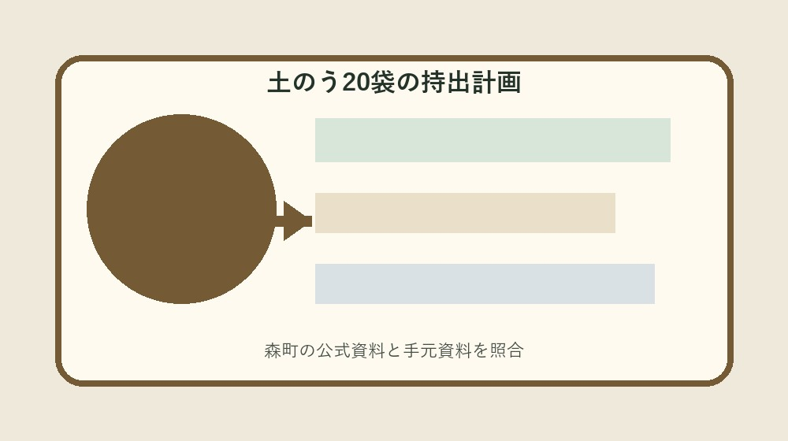
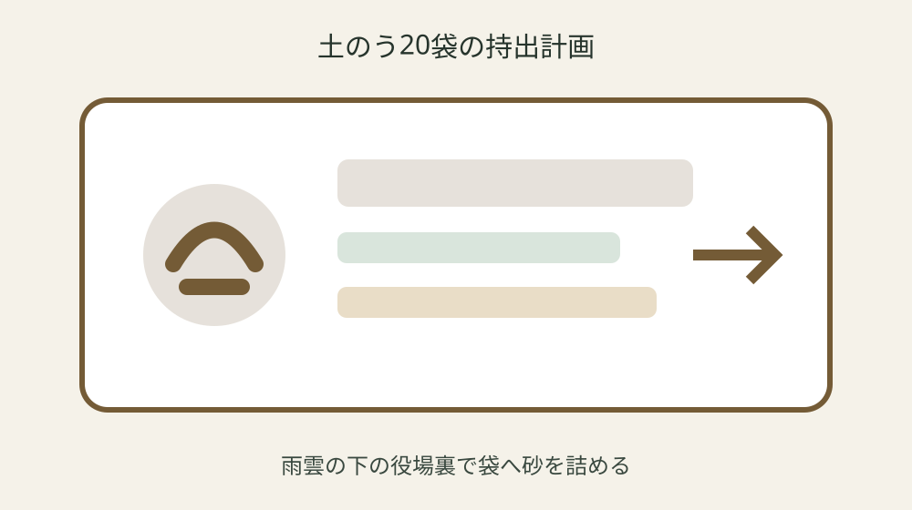
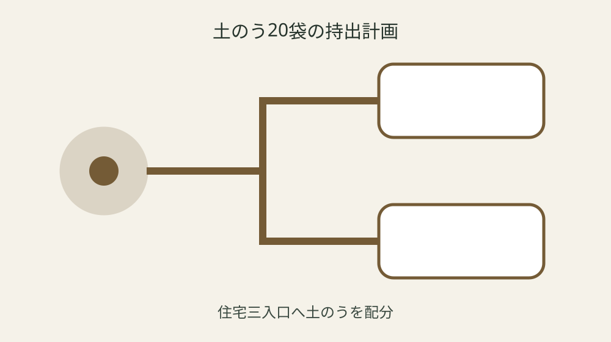

森町の土のうステーション｜20袋を作る前に運搬・配置・処分まで決める

結論：土のう作製・配置計画へ対象・基準日・手元資料・未確認事項を分け、最初の一問だけを森町へ確認します。土のうステーションは役場本庁舎裏に設置を起点に、実行直前の再確認までを一続きにしてください。
浸水しやすい入口を先に特定する
浸水しやすい入口を先に特定するでは、まず「土のうステーションは役場本庁舎裏に設置」という森町公式の条件を起点にします。土のう作製・配置計画には対象、日付、資料名、確認日を別欄で置き、制度名だけのメモにしません。手元の現物と公式説明が食い違う場合は、都合のよい方へ寄せず、差がある状態をそのまま残します。
実際の確認は、現物を見る人、電話する人、記録する人を決めてから始めます。申請者自身が土のうを作製するも同じ行へ書き、豪雨接近後の作業を避けます。数字や固有名は読み上げて照合し、不明欄には推定値ではなく「未確認」と次の確認先を記します。 この判断も土のう作製・配置計画の更新対象です。
森町へ尋ねるときは「浸水しやすい入口を先に特定するについて、手元ではここまで確認した」と一文で伝えます。そのうえで用途は浸水被害の軽減に限られるが自分の案件にどう当てはまるかを一問だけ確認します。回答日、担当部署、再確認が必要な時期まで記録すれば、家族や同僚が同じ質問を繰り返さずに済みます。 この判断も土のう作製・配置計画の更新対象です。
土のう作製・配置計画の更新では旧版を消しません。祝日と年末年始は受付対象外を採用した根拠、変更前の記載、変更した日を並べます。公式ページの更新や個別事情で結論が変わることがあるため、実行直前に最新案内を見直し、確認できない場合は作業を一段止めます。
必要袋数を入口ごとに見積もる
必要袋数を入口ごとに見積もるでは、まず「危機管理課へ土のう支給申請書を提出する」という森町公式の条件を起点にします。土のう作製・配置計画には対象、日付、資料名、確認日を別欄で置き、制度名だけのメモにしません。手元の現物と公式説明が食い違う場合は、都合のよい方へ寄せず、差がある状態をそのまま残します。
実際の確認は、現物を見る人、電話する人、記録する人を決めてから始めます。作製した土のうは申請者自身が運搬するも同じ行へ書き、自家用車の積載超過を避けます。数字や固有名は読み上げて照合し、不明欄には推定値ではなく「未確認」と次の確認先を記します。 この判断も土のう作製・配置計画の更新対象です。
森町へ尋ねるときは「必要袋数を入口ごとに見積もるについて、手元ではここまで確認した」と一文で伝えます。そのうえで支給後の管理と処分は申請者が行うが自分の案件にどう当てはまるかを一問だけ確認します。回答日、担当部署、再確認が必要な時期まで記録すれば、家族や同僚が同じ質問を繰り返さずに済みます。 この判断も土のう作製・配置計画の更新対象です。
土のう作製・配置計画の更新では旧版を消しません。砂と必要な資機材が配備されているを採用した根拠、変更前の記載、変更した日を並べます。公式ページの更新や個別事情で結論が変わることがあるため、実行直前に最新案内を見直し、確認できない場合は作業を一段止めます。
平日の申請時間を確保する
平日の申請時間を確保するでは、まず「町は申請者へ土のう袋を支給する」という森町公式の条件を起点にします。土のう作製・配置計画には対象、日付、資料名、確認日を別欄で置き、制度名だけのメモにしません。手元の現物と公式説明が食い違う場合は、都合のよい方へ寄せず、差がある状態をそのまま残します。
実際の確認は、現物を見る人、電話する人、記録する人を決めてから始めます。1回の申請につき1世帯20袋が上限も同じ行へ書き、土のうだけで避難不要と判断することを避けます。数字や固有名は読み上げて照合し、不明欄には推定値ではなく「未確認」と次の確認先を記します。 この判断も土のう作製・配置計画の更新対象です。
森町へ尋ねるときは「平日の申請時間を確保するについて、手元ではここまで確認した」と一文で伝えます。そのうえで受付は平日8時30分から17時15分が自分の案件にどう当てはまるかを一問だけ確認します。回答日、担当部署、再確認が必要な時期まで記録すれば、家族や同僚が同じ質問を繰り返さずに済みます。 この判断も土のう作製・配置計画の更新対象です。
土のう作製・配置計画の更新では旧版を消しません。大雨時の屋外作業を避け早めに備える必要があるを採用した根拠、変更前の記載、変更した日を並べます。公式ページの更新や個別事情で結論が変わることがあるため、実行直前に最新案内を見直し、確認できない場合は作業を一段止めます。
積載量と運搬者を決める
積載量と運搬者を決めるでは、まず「申請者自身が土のうを作製する」という森町公式の条件を起点にします。土のう作製・配置計画には対象、日付、資料名、確認日を別欄で置き、制度名だけのメモにしません。手元の現物と公式説明が食い違う場合は、都合のよい方へ寄せず、差がある状態をそのまま残します。
実際の確認は、現物を見る人、電話する人、記録する人を決めてから始めます。用途は浸水被害の軽減に限られるも同じ行へ書き、豪雨接近後の作業を避けます。数字や固有名は読み上げて照合し、不明欄には推定値ではなく「未確認」と次の確認先を記します。 この判断も土のう作製・配置計画の更新対象です。
森町へ尋ねるときは「積載量と運搬者を決めるについて、手元ではここまで確認した」と一文で伝えます。そのうえで祝日と年末年始は受付対象外が自分の案件にどう当てはまるかを一問だけ確認します。回答日、担当部署、再確認が必要な時期まで記録すれば、家族や同僚が同じ質問を繰り返さずに済みます。 この判断も土のう作製・配置計画の更新対象です。
土のう作製・配置計画の更新では旧版を消しません。土のうステーションは役場本庁舎裏に設置を採用した根拠、変更前の記載、変更した日を並べます。公式ページの更新や個別事情で結論が変わることがあるため、実行直前に最新案内を見直し、確認できない場合は作業を一段止めます。

作製時の服装と水分を準備する
作製時の服装と水分を準備するでは、まず「作製した土のうは申請者自身が運搬する」という森町公式の条件を起点にします。土のう作製・配置計画には対象、日付、資料名、確認日を別欄で置き、制度名だけのメモにしません。手元の現物と公式説明が食い違う場合は、都合のよい方へ寄せず、差がある状態をそのまま残します。
実際の確認は、現物を見る人、電話する人、記録する人を決めてから始めます。支給後の管理と処分は申請者が行うも同じ行へ書き、自家用車の積載超過を避けます。数字や固有名は読み上げて照合し、不明欄には推定値ではなく「未確認」と次の確認先を記します。 この判断も土のう作製・配置計画の更新対象です。
森町へ尋ねるときは「作製時の服装と水分を準備するについて、手元ではここまで確認した」と一文で伝えます。そのうえで砂と必要な資機材が配備されているが自分の案件にどう当てはまるかを一問だけ確認します。回答日、担当部署、再確認が必要な時期まで記録すれば、家族や同僚が同じ質問を繰り返さずに済みます。 この判断も土のう作製・配置計画の更新対象です。
土のう作製・配置計画の更新では旧版を消しません。危機管理課へ土のう支給申請書を提出するを採用した根拠、変更前の記載、変更した日を並べます。公式ページの更新や個別事情で結論が変わることがあるため、実行直前に最新案内を見直し、確認できない場合は作業を一段止めます。
玄関・勝手口・車庫を混ぜない
玄関・勝手口・車庫を混ぜないでは、まず「1回の申請につき1世帯20袋が上限」という森町公式の条件を起点にします。土のう作製・配置計画には対象、日付、資料名、確認日を別欄で置き、制度名だけのメモにしません。手元の現物と公式説明が食い違う場合は、都合のよい方へ寄せず、差がある状態をそのまま残します。
実際の確認は、現物を見る人、電話する人、記録する人を決めてから始めます。受付は平日8時30分から17時15分も同じ行へ書き、土のうだけで避難不要と判断することを避けます。数字や固有名は読み上げて照合し、不明欄には推定値ではなく「未確認」と次の確認先を記します。 この判断も土のう作製・配置計画の更新対象です。
森町へ尋ねるときは「玄関・勝手口・車庫を混ぜないについて、手元ではここまで確認した」と一文で伝えます。そのうえで大雨時の屋外作業を避け早めに備える必要があるが自分の案件にどう当てはまるかを一問だけ確認します。回答日、担当部署、再確認が必要な時期まで記録すれば、家族や同僚が同じ質問を繰り返さずに済みます。 この判断も土のう作製・配置計画の更新対象です。
土のう作製・配置計画の更新では旧版を消しません。町は申請者へ土のう袋を支給するを採用した根拠、変更前の記載、変更した日を並べます。公式ページの更新や個別事情で結論が変わることがあるため、実行直前に最新案内を見直し、確認できない場合は作業を一段止めます。
使用後の乾燥と保管場所を決める
使用後の乾燥と保管場所を決めるでは、まず「用途は浸水被害の軽減に限られる」という森町公式の条件を起点にします。土のう作製・配置計画には対象、日付、資料名、確認日を別欄で置き、制度名だけのメモにしません。手元の現物と公式説明が食い違う場合は、都合のよい方へ寄せず、差がある状態をそのまま残します。
実際の確認は、現物を見る人、電話する人、記録する人を決めてから始めます。祝日と年末年始は受付対象外も同じ行へ書き、豪雨接近後の作業を避けます。数字や固有名は読み上げて照合し、不明欄には推定値ではなく「未確認」と次の確認先を記します。 この判断も土のう作製・配置計画の更新対象です。
森町へ尋ねるときは「使用後の乾燥と保管場所を決めるについて、手元ではここまで確認した」と一文で伝えます。そのうえで土のうステーションは役場本庁舎裏に設置が自分の案件にどう当てはまるかを一問だけ確認します。回答日、担当部署、再確認が必要な時期まで記録すれば、家族や同僚が同じ質問を繰り返さずに済みます。 この判断も土のう作製・配置計画の更新対象です。
土のう作製・配置計画の更新では旧版を消しません。申請者自身が土のうを作製するを採用した根拠、変更前の記載、変更した日を並べます。公式ページの更新や個別事情で結論が変わることがあるため、実行直前に最新案内を見直し、確認できない場合は作業を一段止めます。

処分方法を使う前から確認する
処分方法を使う前から確認するでは、まず「支給後の管理と処分は申請者が行う」という森町公式の条件を起点にします。土のう作製・配置計画には対象、日付、資料名、確認日を別欄で置き、制度名だけのメモにしません。手元の現物と公式説明が食い違う場合は、都合のよい方へ寄せず、差がある状態をそのまま残します。
実際の確認は、現物を見る人、電話する人、記録する人を決めてから始めます。砂と必要な資機材が配備されているも同じ行へ書き、自家用車の積載超過を避けます。数字や固有名は読み上げて照合し、不明欄には推定値ではなく「未確認」と次の確認先を記します。 この判断も土のう作製・配置計画の更新対象です。
森町へ尋ねるときは「処分方法を使う前から確認するについて、手元ではここまで確認した」と一文で伝えます。そのうえで危機管理課へ土のう支給申請書を提出するが自分の案件にどう当てはまるかを一問だけ確認します。回答日、担当部署、再確認が必要な時期まで記録すれば、家族や同僚が同じ質問を繰り返さずに済みます。 この判断も土のう作製・配置計画の更新対象です。
土のう作製・配置計画の更新では旧版を消しません。作製した土のうは申請者自身が運搬するを採用した根拠、変更前の記載、変更した日を並べます。公式ページの更新や個別事情で結論が変わることがあるため、実行直前に最新案内を見直し、確認できない場合は作業を一段止めます。
良い点
土のう作製・配置計画に確認済み事実と未確認事項を分けると、制度の対象外を恐れて何もしない状態から、次の一問を決める状態へ進めます。
町は申請者へ土のう袋を支給するという具体条件を家族で共有でき、担当が替わっても根拠をたどれます。
期限、現物、回答日が一枚に集まり、書類の取り直しと問い合わせの重複を減らせます。
公式資料だけで断定できない個別条件を未確認として残せることも、この方法の利点です。
注文したい点
森町の案内には制度条件が整理されていますが、初めて手続きをする人には、個別案件の順番が読み取りにくい部分があります。
豪雨接近後の作業を避けるため、記入例や受付後の流れも同じページから確認できるとさらに使いやすくなります。
年度更新時には変更箇所と変更日が目立つ表示になると、保存した旧資料との取り違えを減らせます。
これは現行制度の否定ではなく、利用者が正しい窓口へ一度で到達するための改善要望です。
対案・結論
結論は、土のう作製・配置計画を今日一枚作り、最初の未確認欄だけを森町へ尋ねることです。
全条件を一度に覚えず、公式事実、手元資料、窓口回答、次の期限を四列に分けます。
作製した土のうは申請者自身が運搬するを確認しても、個別可否は案件ごとに変わり得るため、支出や申請の直前に再確認します。
確認が終わったら旧版を残し、次回の担当が同じ根拠から続けられる状態を完成とします。
大石の視点
ここまでの制度条件は森町公式資料から確認した事実です。以下は私、大石浩之の実務提案であり、森町の公式見解ではありません。
私は土のう作製・配置計画を紙一枚から始め、原本を動かさず、写真や写しへ番号を付ける方法を勧めます。
未確認欄は失敗ではありません。確認先と期限のある空欄は、根拠のない推測より実用的です。
個人情報を含む場合は内部保管版と提出版を分け、必要な範囲だけを相手へ渡してください。
よくある質問
土のう作製・配置計画は何から始めますか。
対象者または対象物、基準日、手元資料を一行にし、最初の公式条件「土のうステーションは役場本庁舎裏に設置」と照合します。
資料が足りなくても土のう作製・配置計画を作れますか。
作れます。不足欄を推測で埋めず、必要資料、確認先、期限を書けば、後から安全に再開できます。
公式ページを一度保存すれば十分ですか。
十分ではありません。危機管理課へ土のう支給申請書を提出するなどの条件は更新される場合があるため、実行直前に現行ページを確認します。
家族や担当者へ渡すとき何を添えますか。
確認済み事実、未確認事項、次の担当、期限、原本保管場所、町へ尋ねた日と回答を添えます。
公式情報源
- 土のうステーションの設置（2026年8月20日確認）
- 森町防災ハザードマップ（2026年8月20日確認）

最終確認日：2026-08-20 ／ 公表事実と執筆者の解釈・意見を分けて記載しています。